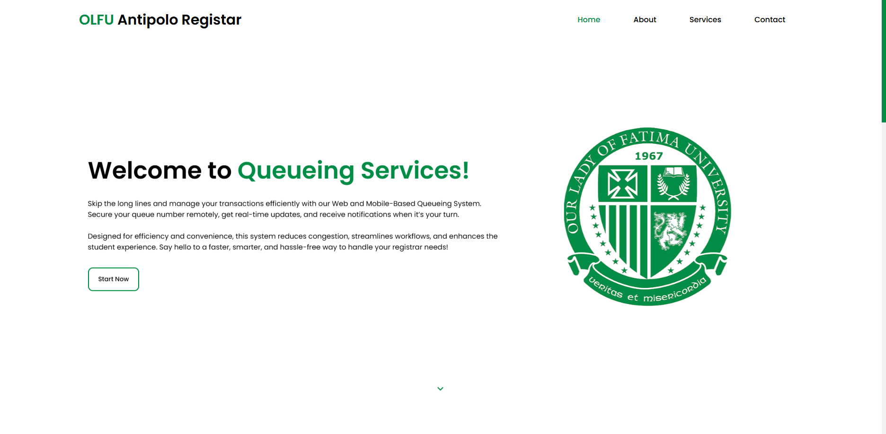
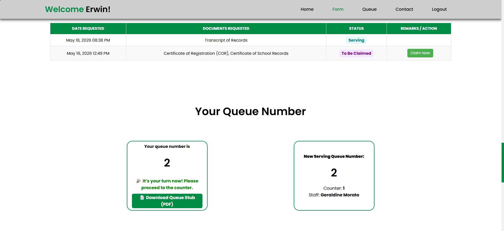
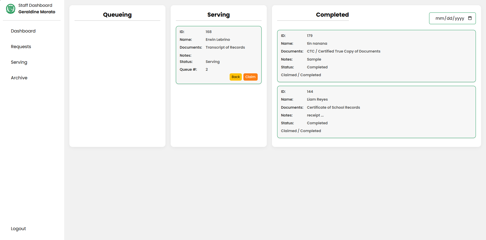

A digital queue management system developed for the OLFU Antipolo Registrar Office to improve transaction flow by replacing manual queue handling with real-time ticket generation, monitoring, and service management.

The Queueing Management System is a web and mobile-based platform designed to streamline registrar transactions by allowing students to remotely generate queue numbers, monitor queue status, and receive updates while staff manage requests through an administrative interface. The system aims to improve service efficiency, reduce physical waiting time, and provide better visibility of queue progress.
Traditional manual queueing processes can lead to:
Long waiting times without visibility of queue progress. Difficulty
managing multiple student requests. Inefficient communication
between students and service counters. Limited tracking of
transaction status and queue history. The system was developed to
provide a more organized and accessible queue management process.
Backend
Frontend
Mobile Application
Tools
The system follows a client-server architecture consisting of:
Student Mobile Application → Allows users to request queue numbers,
monitor status, and receive updates.
Web Management Dashboard → Allows staff and administrators to manage
queues, process requests, and monitor service flow. We also have
student access in the website application.
Database Layer → Stores user information, queue records, transaction
history, and system data. The mobile and web platforms communicate
with the backend services to maintain synchronized queue information
and ensure consistent updates across users.

